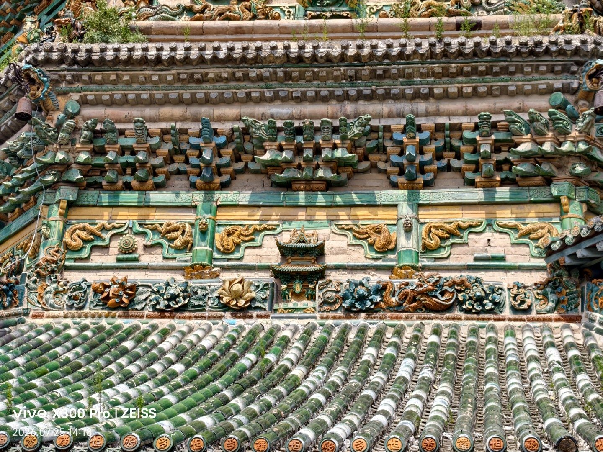
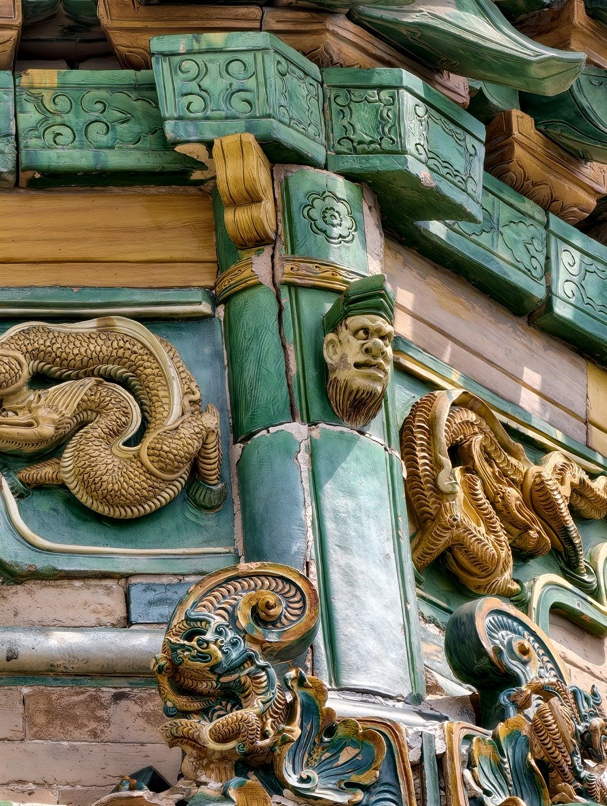
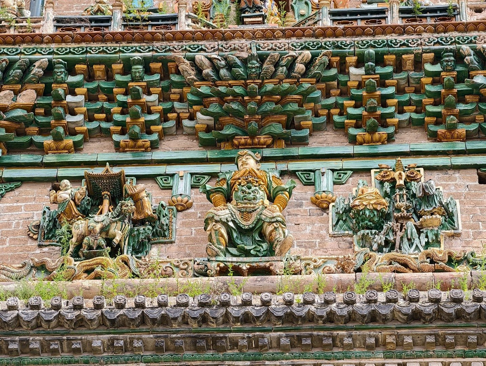
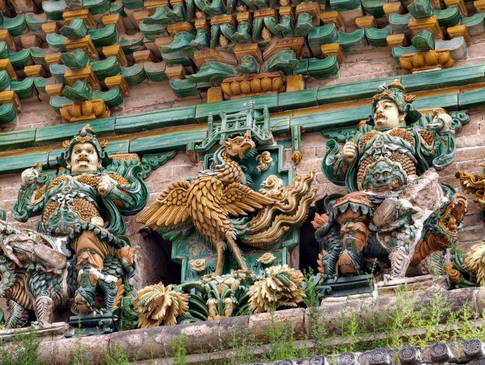
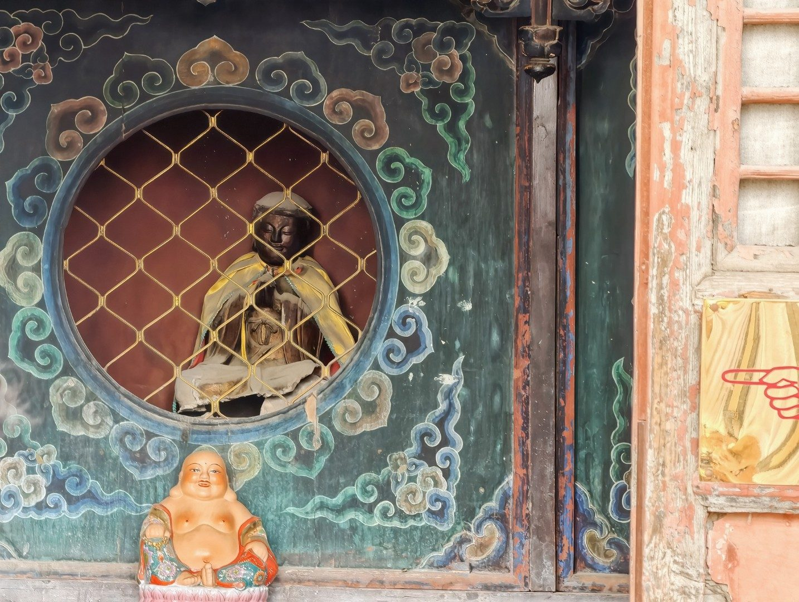
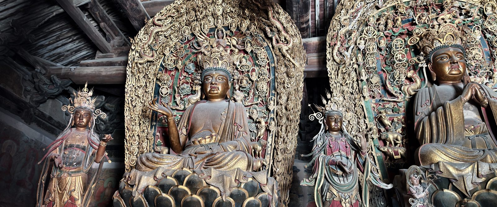
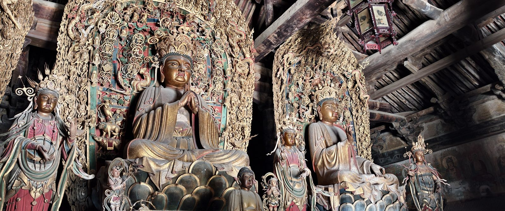
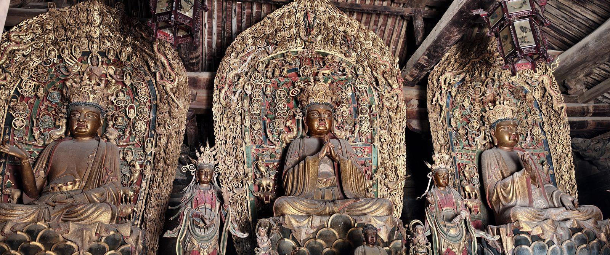
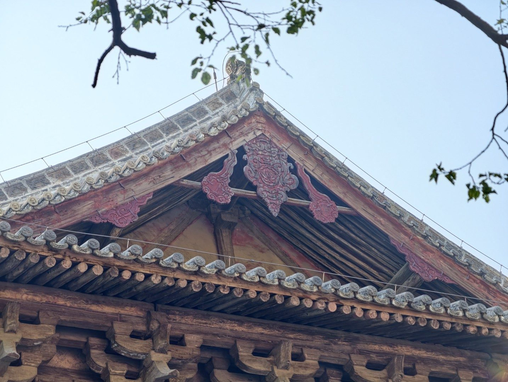
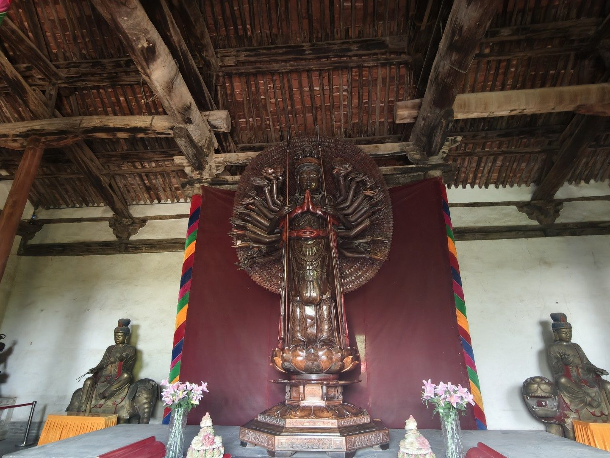

广胜寺
广胜寺分上寺、下寺和水神庙。这篇按照片整理飞虹塔、上寺弥陀殿、天中天殿和下寺，重点看琉璃构件、造像组合、彩塑背光和壁画流散。水神庙明应王殿现存元代壁画不在本批照片中，因此不展开。
还要先分清两组容易混淆的壁画：“广胜三绝”中的元代壁画，通常指水神庙明应王殿现存的祈雨、行雨、酬神等壁画；本篇末尾谈到的《药师佛佛会图》《炽盛光佛佛会图》，则原在下寺后殿，后来流散海外。两者不是同一组作品。
一、飞虹塔：砖塔与琉璃外壳
飞虹塔现塔建于明正德十年至嘉靖六年（1515—1527），八角十三层，通高47.31米。主体由青砖砌成，二层以上外表镶嵌琉璃面砖、琉璃瓦和仿木构件。塔身逐层收分，檐端连线接近斜直线，轮廓与普通木构楼阁并不相同。

底层木构围廊和南面抱厦是明天启年间加建，不是清代建筑。围廊木架、塔身砖砌和外部琉璃是三个不同层次：木构围廊保护塔基，砖塔承担主体荷载，琉璃主要形成防水和装饰表层。不能把整座塔理解成一座放大版的木楼。
关于琉璃产地，旧讲解常直接写成“介休窑预制”，这个说法过于肯定。飞虹塔及广胜寺其他建筑留有工匠题款，洪洞本地也有制陶传统；新华社报道援引研究，推测部分琉璃由当地工匠烧制。介休是山西重要的琉璃产地，但不能因此把飞虹塔全部归入介休窑。

二、琉璃仿木构件：看见名称，也看见功能
塔身把瓦、斗栱、栏板、垂莲柱和楼阁都做成了琉璃。所谓“仿木”，首先是形制模仿：琉璃斗栱保留斗、栱、昂等木构外观，但不等于它们像木斗栱一样独立承重。看这些构件时，既要辨认名称，也要记得它们已经是另一种材料。

正脊位于屋顶前后两坡交会处的最高位置，脊端常见鸱吻，中央可立脊刹。鸱吻做成张口吞脊的兽形，既有收束脊端的构造作用，也积累了镇火等象征意义。套兽位于角梁梁头，风铎悬在檐下；它们的位置不同，不能只按“都是一个兽头”混称。


斗栱上还可见人脸、兽首和托举姿态的人物。木构建筑中的角神，位于转角斗栱由昂之上，顶端支撑角梁，《营造法式》记有“若宝藏神或宝瓶”的形式。角神不是密宗专属；但辨认飞虹塔上的具体人物，也仍要看它在结构中的位置，不能只凭忿怒表情下结论。

三、塔身人物与佛龛：不要把所有鸟兽都套进天龙八部
檐角和转角处常见托举、跨兽的力士形象。他们处在塔身外缘，视觉上承担护卫和支撑的作用。佛教中的金刚力士、建筑中的角神都可能呈托举姿态，两者有交叉，却不是看到一个扛梁小人就可以直接互换名称。

甲胄人物可按塔身常见的天王、金刚系统理解。中央大鸟则不宜只因外形像鸟就认作金翅鸟；飞虹塔相关建筑记录中有凤凰居中、金刚分列两侧的配置。没有完整龛位和榜题时，称“凤鸟与甲胄人物”比直接指定迦楼罗更稳妥。


与外层护法相比，塔身佛龛更接近正式礼拜空间：主尊居中，胁侍、楼阁和花卉围绕。龛形虽有变化，也不能只凭坐像数量或颜色断定尊名。先读整体组合，再读细节，是飞虹塔与小西天共用的辨认方法。

这块琉璃壁面中央有塔，两侧坐像头部残损。有人据此联想到《法华经·见宝塔品》的释迦、多宝二佛并坐题材，但典型二佛并坐强调二佛同处多宝塔中，这里的保存状态并不完整。可以把它作为待核对的线索，不能直接定名。

四、围廊文字瓦当与塔内造像
围廊檐口有文字瓦当，一组可辨“南无阿弥陀佛”，另一组常与佛顶咒、白伞盖咒语相联系。由于单张照片没有连续拍全，本文不逐字转写，也不据此给整座塔划定单一宗派。名号和咒语进入瓦当，首先说明文字本身也是建筑装饰的一部分。

围廊木梁上还能看到蓝绿彩画。它与塔身琉璃是两种工艺：一个是木构表面的彩画，一个是陶胎施釉烧造。颜色新旧可以帮助观察修缮层次，却不能单独用作断代证据；围廊和抱厦的明代加建年代，仍要以碑刻和建筑记录为准。

塔心圆窗内的铜佛，按《世界佛教美术图说大辞典》等记录为释迦牟尼佛，不是阿弥陀佛。窗下另有布袋和尚形象的大肚弥勒。布袋和尚是五代以后中国弥勒信仰中的重要化身形象，但“倒坐就是背对现在、面向未来”属于后加的故事性解释，并非辨认造像的依据。

五、弥陀殿：西方三圣与《赵城金藏》
飞虹塔后的弥陀殿保留元代梁架结构，明代又有重修，单檐歇山顶。它的价值不只在造像，也在木构：殿内使用大斜梁并减少部分梁架，形成较开阔的室内空间。建筑是元代遗制，不等于殿内所有塑像、彩画和屋顶脊饰都同属元代。

殿内正中为铜铸阿弥陀佛，两侧为观世音菩萨和大势至菩萨，合称“西方三圣”。观音与大势至是固定胁侍组合，不因姿态相近就换成其他菩萨。若要继续分左右，应看冠中化佛、宝瓶等标志，而不是只看手中姿势。

殿内红色藏经柜是《赵城金藏》的原存放处。1933年，这部金代刻印的汉文大藏经在这里被发现，后来主要入藏国家图书馆。它与敦煌遗书、《永乐大典》《四库全书》并称国家图书馆四大镇馆之宝。今天看到的是藏经故地，不是经卷仍原样存放在柜中。
六、天中天殿：三身佛与四菩萨
天中天殿又称毗卢殿，保留元代建筑结构，明弘治十年（1497）重修。殿内三佛四菩萨为明代彩塑。三佛从东至西依次是报身卢舍那佛、法身毗卢遮那佛、应身释迦牟尼佛；四菩萨为文殊、普贤、观音、地藏。
三身佛不是三个各自主管一方的佛，也不是横三世佛。法身指佛法真理之身，报身指修行圆满、受用庄严之身，应身或化身指随众生因缘示现之身。中央主尊胸前手印与毗卢遮那佛相应，但手印仍要与三尊组合、殿名和背光内容一起判断，不能变成“一种手印只认一尊佛”的口诀。


七、真正华丽的是彩塑背光，不是铜花罩
三尊主佛身后接近梁架的高大装饰，是彩塑背光，不是“鎏金透雕铜花罩”。相关研究明确记载其为木质胎骨，以泥塑形，再施彩绘和贴金；中央背光高约6.5米。木骨榫卯提供框架，圆雕、浮雕和悬塑共同形成前后层次。

背光最外层由不同形态的火焰纹组成，内部还有龙凤、缠枝纹、小佛和人物故事。早期石刻、壁画中的背光往往较平面，这里却把“光”做成了有厚度的空间：近处是卷草和火焰，深处有龙凤、人物和小佛。主尊坐在前方，背光则像一座向梁架展开的佛国。
中央背光中还可见与炽盛光佛信仰有关的出行、星神等图像。这说明背光不是随意堆砌吉祥纹样，但也不能因此就把中央主尊简单改名。主尊身份与背光所叙故事相关而不完全等同，应分开讨论。
殿内壁画和壁面佛龛也各有体系。常见著录记载，沿壁木龛供三十五佛，壁画中有五十三佛，两者共同对应八十八佛礼忏题材；后壁另有十二圆觉菩萨壁画。因此，这一角壁画不能笼统称为“千佛图”，也不能把三身佛、八十八佛和十二圆觉混成一组。

八、下寺：元代木构、山面构件与空白壁画墙
下寺后殿建于元至大二年（1309），以后多次重修。减柱造是它的重要特点：新华社报道引述建筑研究，按开间本应设金柱十二根，实际只用六根，其余减去，以梁架变化换取开阔的礼佛空间。所谓减柱不是简单抽掉柱子，而是柱、梁、内额共同重新组织受力。
山面顶端可见悬鱼与惹草。《营造法式》称垂鱼、惹草，位置在博缝板交会处，首先有遮缝、加强山面木装修的作用，后来才发展出丰富纹样。羊续“悬鱼拒贿”的故事可以作为后世清廉寓意理解，却不能替代构件本身的建筑功能。

殿内照片中可见千手千眼观音、文殊、普贤和罗汉等陈设。千手千眼表现观音遍护、遍观的慈悲愿力，但这里只据照片辨认题材，不把这些像一概称为元代原作。古建筑的年代、壁画年代和现有塑像年代必须分别判断。

下寺后殿东西山墙原有两铺大型佛教壁画。1929年《重修广胜下寺佛庙序》记载，因殿宇倾塌、修庙无资，僧人与士绅于1928年议售壁画，得银洋一千六百元用于修庙。它既有文物被迫流散的背景，也不能省略当时“筹款修庙”的碑刻记载，只写成一句简单的盗卖故事。

原西壁《炽盛光佛佛会图》现藏纳尔逊—阿特金斯艺术博物馆，东壁《药师佛佛会图》现藏纽约大都会艺术博物馆；同殿南壁《菩萨写经图》残片入藏辛辛那提艺术博物馆，北壁残片入藏底特律艺术博物馆。宾夕法尼亚大学博物馆另藏有下寺前殿壁画，不能与前述后殿元代壁画混为一谈。
今天殿内的大片白墙不是“元代极简审美”，而是壁画离开建筑后的结果。理解这一点，再看墙前塑像和残留画痕，看到的就不只是殿内现状，也包括一件艺术品从宗教空间转为博物馆藏品的复杂历史。
主要核对资料：
- 新华社《洪洞广胜寺，梁林叹珍奇》：飞虹塔、工匠题款、《赵城金藏》、减柱造与下寺壁画
- 《世界佛教美术图说大辞典》“广胜寺飞虹塔”
- 陈少华《论广胜寺毗卢殿彩塑背光艺术》：三身佛、四菩萨及背光材质和结构
- 芝加哥大学“广胜下寺壁画的流转与重识”：1929年碑文、壁画原位及海外馆藏
- 古建筑构件说明：角神、悬鱼与惹草
- 大都会艺术博物馆藏《药师佛佛会图》藏品记录